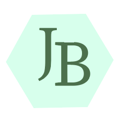
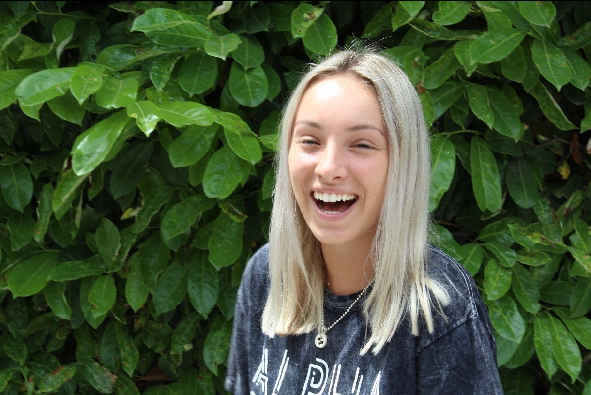

Jessica Baumann
About Me
Hello, welcome to my website! I'm currently a junior at James Madison University majoring in Media Arts and Design. My specific concentration within the School of Media Arts and Design is Interactive Design. My minor is Educational Media. I've always had a passion towards creativity-it makes me happy.
I'm really interested in pursuing a career in Interactive Design. I always knew I have a creative side to me. I found out that Interactive Design is the best way for me to express my creative side after looking deep into the SMAD program at JMU. I'm currently in the process of searching for an internship, and I'm excited to enhance my knowledge on Interactive design.


These pictures were taken while I was studying abroad in Italy. I completed 3 academic credits during a month long cultural experience. I took a magazine editing class and I gained many editing skills during this amazing expereince.
Below are some external links to websites that inspire me and my social media.